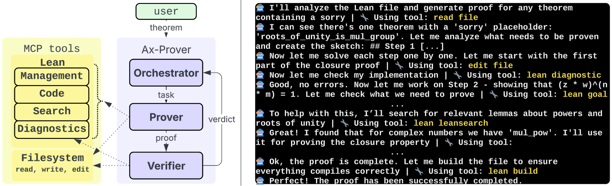

Ax-Prover: A Deep Reasoning Agentic Framework for Theorem Proving in Mathematics and Quantum Physics
Benjamin Breen, Marco Del Tredici, Jacob McCarran, Javier Aspuru Mijares, Weichen Winston Yin, Kfir Sulimany, Jacob M. Taylor, Frank H. L. Koppens, Dirk Englund
Builds a multi-agent LLM prover that calls Lean tools via MCP, and introduces Lean 4 benchmarks in abstract algebra and quantum theory.
Abstract
We present Ax-Prover, a multi-agent system for automated theorem proving in Lean that can solve problems across diverse scientific domains and operate either autonomously or collaboratively with human experts. To achieve this, Ax-Prover approaches scientific problem solving through formal proof generation, a process that demands both creative reasoning and strict syntactic rigor. Ax-Prover meets this challenge by equipping Large Language Models (LLMs), which provide knowledge and reasoning, with Lean tools via the Model Context Protocol (MCP), which ensure formal correctness. To evaluate its performance as an autonomous prover, we benchmark our approach against frontier LLMs and specialized prover models on two public math benchmarks and on two Lean benchmarks we introduce in the fields of abstract algebra and quantum theory. On public datasets, Ax-Prover is competitive with state-of-the-art provers, while it largely outperforms them on the new benchmarks. This shows that, unlike specialized systems that struggle to generalize, our tool-based agentic theorem prover approach offers a generalizable methodology for formal verification across diverse scientific domains. Furthermore, we demonstrate Ax-Prover's assistant capabilities in a practical use case, showing how it enabled an expert mathematician to formalize the proof of a complex cryptography theorem.
Problem
Specialized Lean prover models are trained mainly on mathematics and on fixed Mathlib versions, so they generalize poorly and break when Mathlib changes. They also cannot use external tools or collaborate with humans, and they are expensive to deploy.
Approach
Ax-Prover is a training-free multi-agent system with Orchestrator, Prover and Verifier agents built on general-purpose LLMs such as Claude Sonnet 4. The Prover interleaves reasoning with calls to Lean tools from lean-lsp-mcp via the Model Context Protocol, including diagnostics, goal inspection and the leansearch and loogle lemma search tools. Two new Lean 4 datasets are introduced: AbstractAlgebra, with 100 problems from Dummit & Foote, and QuantumTheorems, on foundational quantum mechanics. Proofs are checked by an external Lean compiler and must contain no sorry.

Figure 1 : Left: the multi-agent workflow of Ax-Prover. Right: the tool-enhanced reasoning of the Prover.
Results
At pass@1, Ax-Prover solves 64% of AbstractAlgebra, 96% of QuantumTheorems and 51% of NuminaMath-LEAN, ahead of Sonnet, DeepSeek-Prover-V2 and Kimina on these sets. It ranks third on PutnamBench with 14% (92 problems). Working with a mathematician over two days, it produced a Lean formalization of over 2000 lines of a cryptography result on branch numbers of matrices over finite fields, and revealed an error in the original approach.